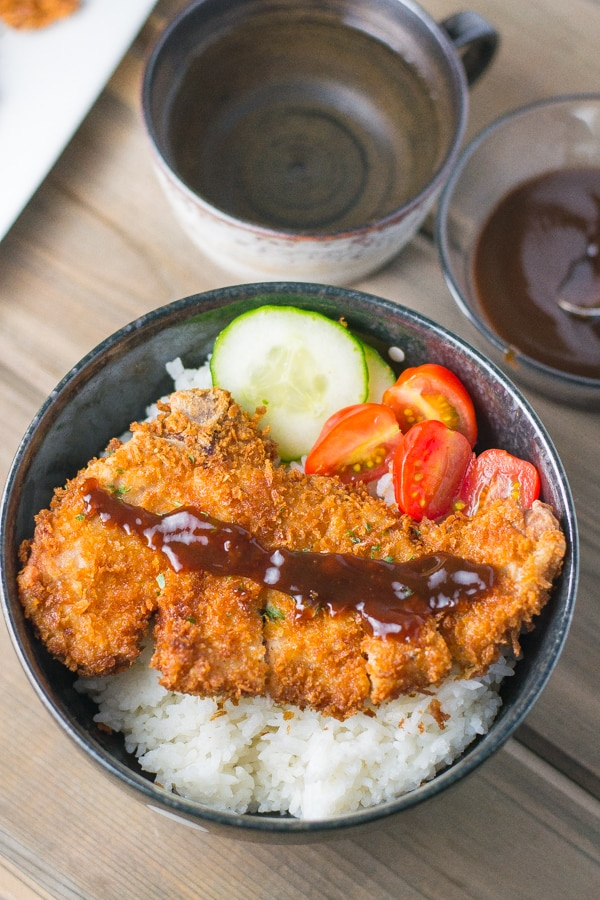

Home
Rokotsu

Description
Tonkatsu is a popular Japanese dish of a breaded, deep-fried pork cutlet, typically made from pork loin or fillet, coated in panko breadcrumbs, and fried until golden and crispy.
Ingredients
- Pork Loin
- Panko Breadcrumbs
- Flour
- Eggs
Prepare and Tenderize the Pork
- Remove Sinew
- Pound the Meat
- Season
Set Up the Breading Station
- All-purpose flour
- Beaten eggs
- Panko breadcrumbs
Deep-Fry for a Golden Crust
- Heat the Oil
- Fry
Slice and Serve
Rest
Cut
Serve